Categorie Merceologiche: raggruppare gli articoli
Target: tecnico installatore / rivenditore.
Obiettivo
Creare le categorie merceologiche nell'archivio della bilancia e collegarle agli articoli, alle schede della tastiera e (se serve) all'IVA e agli sconti.
Cosa sono
Le categorie sono famiglie in cui raggruppare gli articoli, come i reparti di un gestionale. Non sono obbligatorie, ma conviene crearle prima degli articoli, soprattutto con la tastiera RETAIL => 4 Operatori e le schede al richiamo del PLU.
Servono a:
- avere una tastiera più comoda per il cliente, perché permettono di passare da una pagina all'altra in modalità di lavoro;
- fini di statistica;
- ordinare gli archivi e gli articoli collegati;
- gestire correttamente l'IVA in vendita: nella costruzione degli EAN stampabili sotto lo scontrino (o di un QR code) si può richiamare un dato collegato alle categorie, per raggruppare gli articoli per aliquota (per esempio 10% o 4%) senza specificarla articolo per articolo;
- collegare uno sconto diretto alla categoria, aprendo il capitolo delle promozioni.
Non c'è un limite al numero di categorie: puoi usare qualsiasi codice (per esempio la categoria 10 chiamata PANETTERIA).
Prerequisiti
- La Configurazione Operativa è completata.
- Si parte da una bilancia vuota: nessun articolo e nessuna categoria.
Procedura
1. Apri Archivi Dati
Dal menu Setup Bilancia tocca Archivi Dati. Compaiono Articoli PLU, Intestazioni, Categorie Merceologiche, Operatori, Tare e, scorrendo, Testi, Formati Etichetta, Tabelle Nutrizionali e Promozioni.
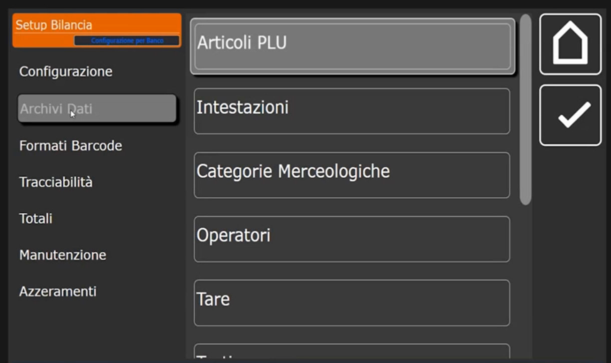
2. Seleziona Categorie Merceologiche
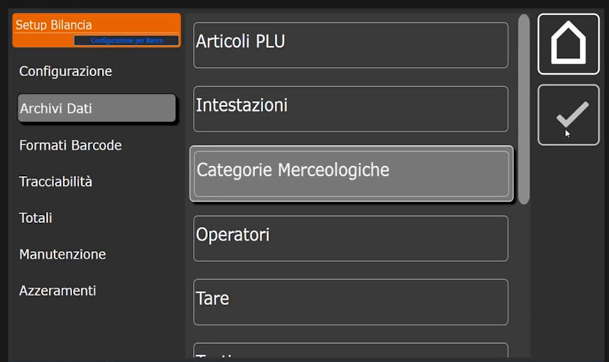
La lista parte vuota. Le colonne sono Codice, Descrizione, Iva % e Sconto. Il pulsante + crea una nuova categoria.
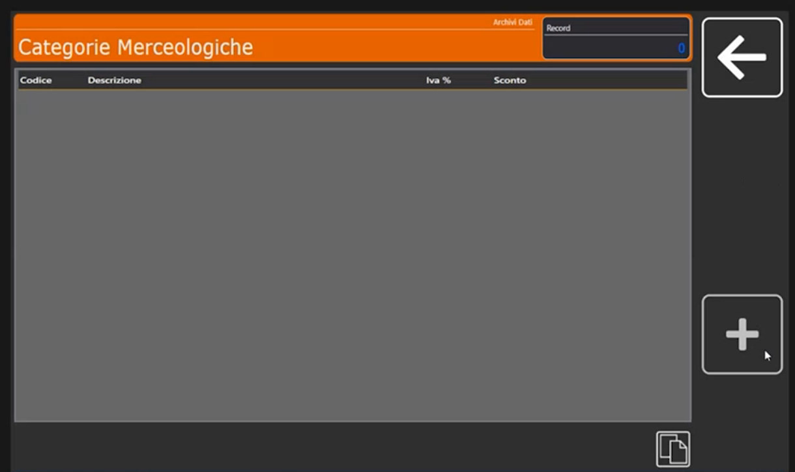
3. Crea la prima categoria
Tocca +: si apre il tastierino Codice Categoria Merceologica. Digita 1 e conferma con Ok. Si apre la scheda Parametri con Codice Categoria Merceologica, Descrizione Categoria, Iva % e Sconto %.
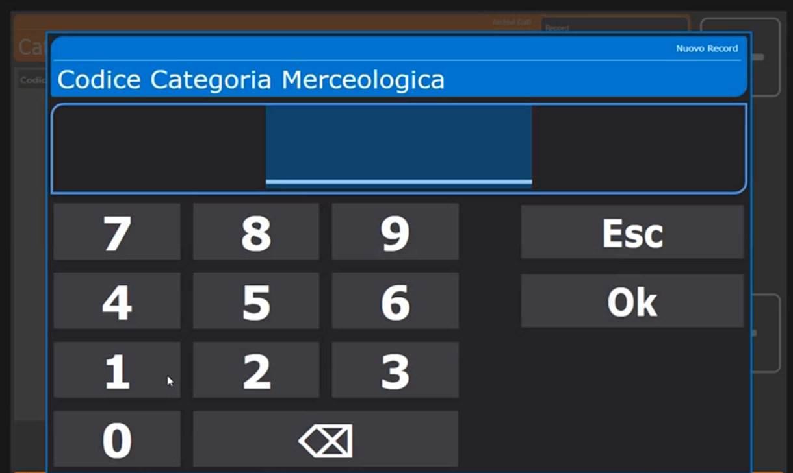
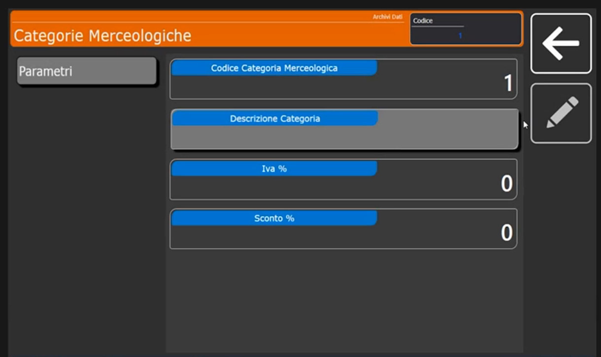
Tocca Descrizione Categoria e scrivi il nome: nell'esempio ROSSE (carni rosse), poi BIANCHE (carni bianche) e VARIE.
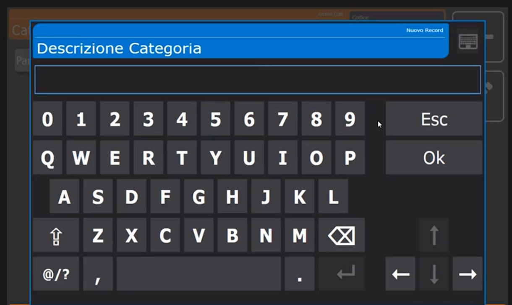
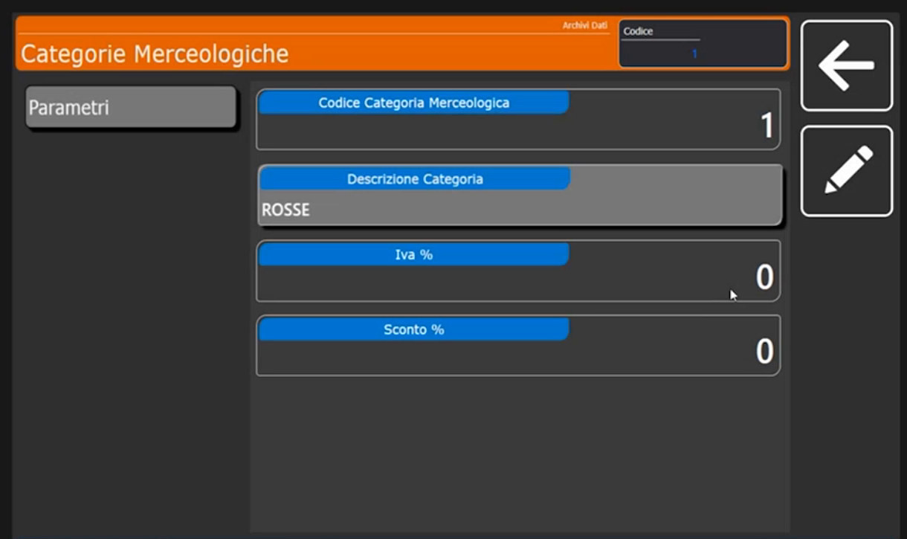
4. Facoltativo: IVA e sconto
Nella stessa scheda due campi, che di default restano a 0:
- Iva %: l'aliquota IVA di riferimento della categoria.
- Sconto %: collega lo sconto diretto alla categoria.
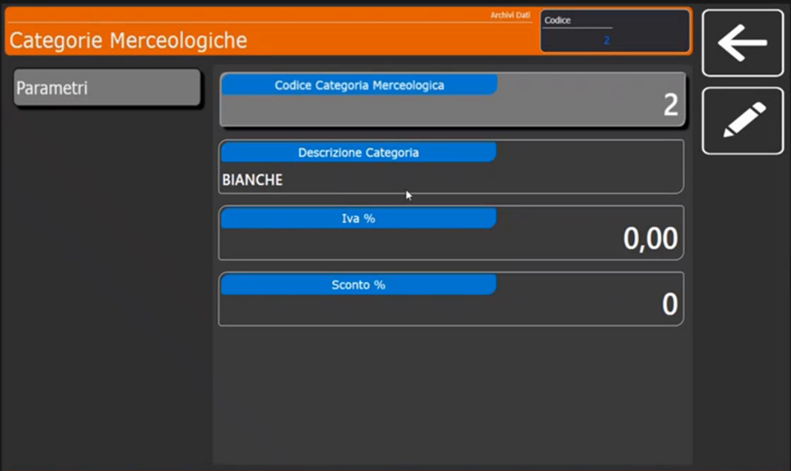
5. Aggiungi le altre categorie
Ripeti con +, un nuovo codice e la descrizione. Per un codice a due cifre, come 10, digita il numero sul tastierino.
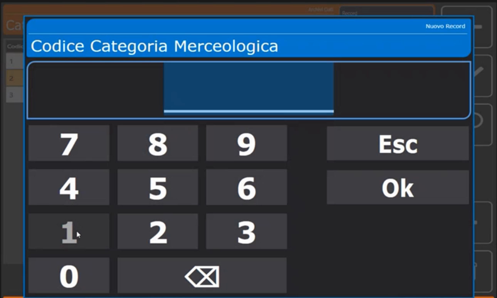
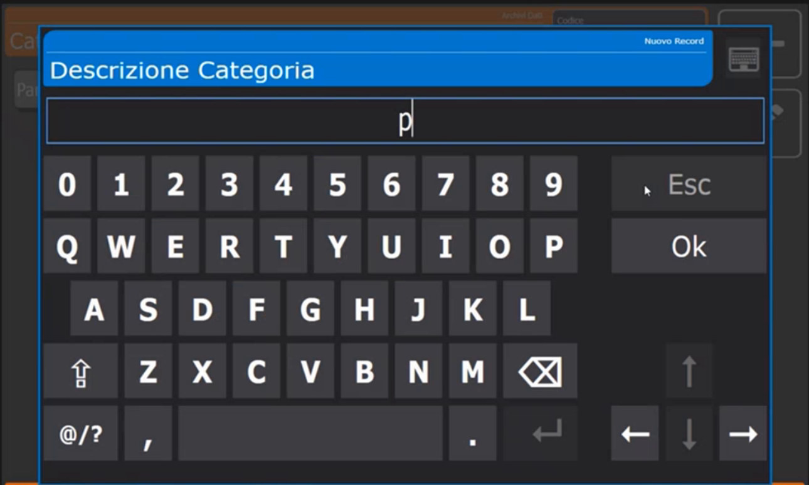
Verifica
La lista mostra le categorie create con Iva % e Sconto a 0.
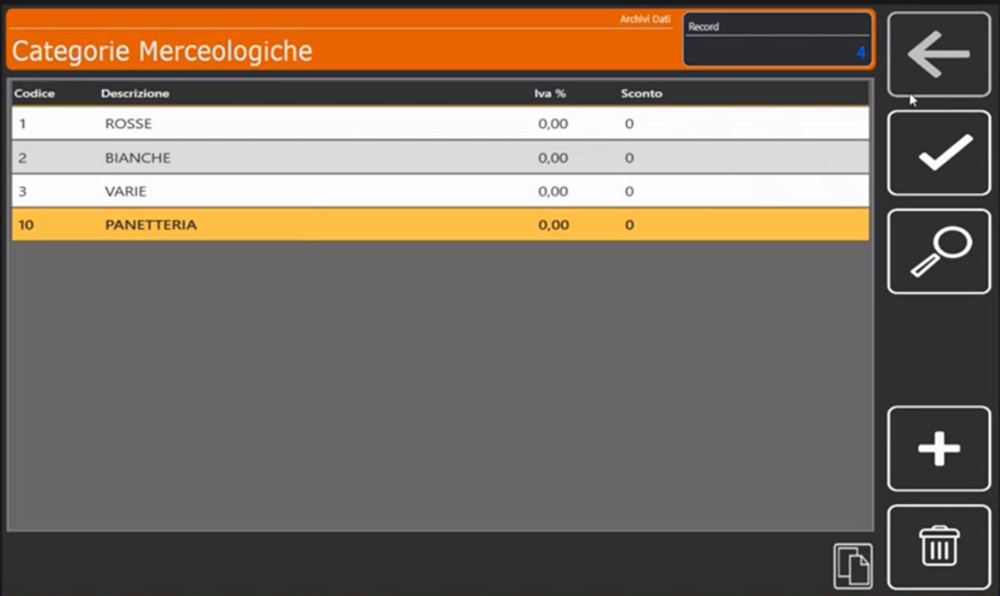
Errori comuni
| Problema | Causa probabile | Rimedio |
|---|---|---|
| Una scheda della tastiera resta vuota | Gli articoli non sono collegati alla categoria | Nella scheda Extra dell'articolo imposta Gruppo Merceologico (Articoli PLU) |
| Il collegamento tra scheda e categoria non funziona | Il Tipo Scheda non è Retail - PLU Merceologico | Controlla la scheda in Schede Tastiera |
Prossimo passo
Con le categorie create si passa agli Articoli PLU.